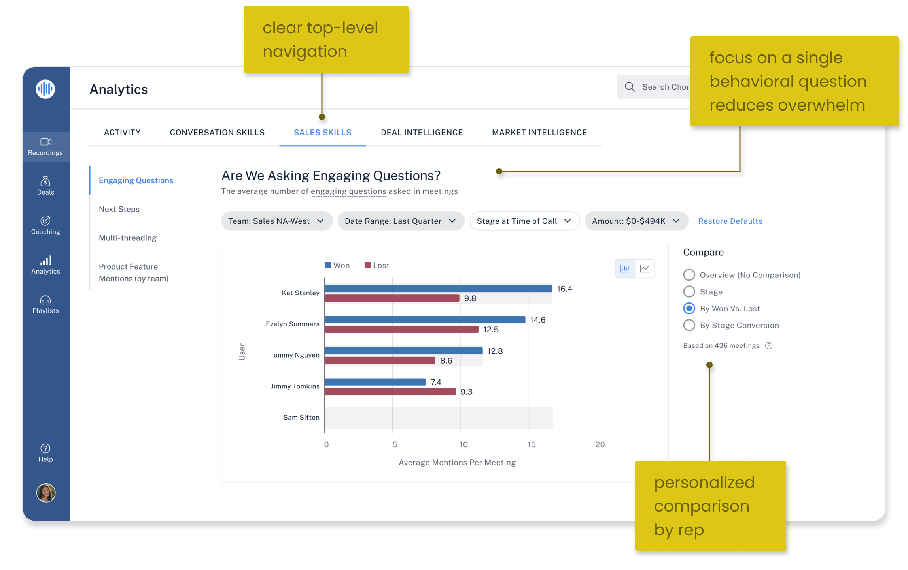
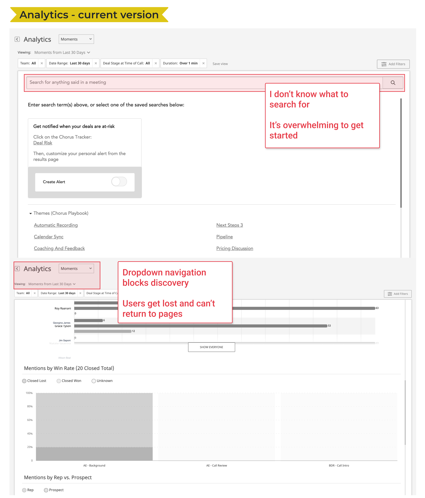
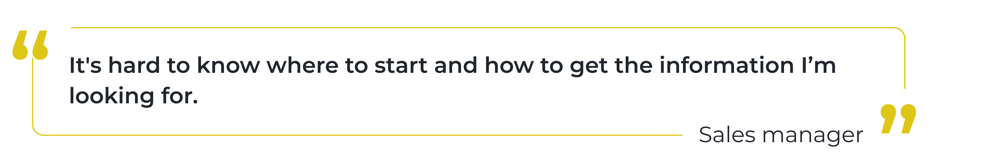

Easy-to-grasp analytics for busy sales managers
Teams capture, analyze, and uplevel their interactions with prospects and customers with Chorus.ai.
The conversation intelligence tool is used across a wide variety of use cases from sales rep training, coaching and enablement, to revenue forecasting and customer feedback evaluation.
I joined a small, growing design team and touched every aspect of the product before the company was aquired by ZoomInfo in July 2021.
Problem
Losing deals to our main competitor
Our powerful analytics suite is loved by the few data-savvy power users who know how to leverage its many features. But for frontline sales managers who are busy triaging the sales cycle for their team, our solution was overly complex. In turn, our reps kept losing deals to our primary competitor.
Objective
Our goal was to remove the feature advantage our competitor held over our intimidating analytics solution.
We targeted frontline sales managers who are end users of this tool as well as sales leaders who heavily influence the buying decision for their organization.
Background
In sales, tracking behaviorial metrics is one way for leaders to quantitatively measure how well their teams are performing. Examples of metrics include: the percentage of time a rep spends talking, the length of their monologues, the number of engaging questions they ask, etc.
Industry experts recommend generalized targets for some of these metrics and sales reps and managers will often aim for these to improve their performance. However sales is a blend of structure and art and leaders that blindly follow an industry target may be missing more unique insights into rep’s individual abilities. We wanted to acknowledge this aspect of behavioral metrics in our solution.
Research
I spoke with our internal sales team and customers to learn about the pitfalls of our existing analytics feature.
The existing analysis feature was powerful but difficult to navigate.
Themes
- Navigation & visibility - It’s hard to find what I’m looking for. I get lost in the confusing nested dropdown navigation. Key pages I want to return to feel hidden from me.
- Comprehension & effective storytelling - I don’t know how to get started on this page. What should I search for? An open search field is daunting, and I don’t know what to do with it.
- Insight into our audience & their needs - In larger organizations, sales operations and sales enablement frequently use business intelligence tools to perform their own analysis on user data. Their need is for a raw export of data vs. an in-product interface.
Process
I developed principles to steer the design towards values expressed by managers and leaders we talked to:
- Simplify the purpose for end-users by organizing information around a single impactful question.
- Show, don’t hide. Common usability feedback across our entire product was that nesting important pages behind a dropdown menu results in the feeling of “getting lost” in our product.
- Map metrics to outcomes to make them actionable. We needed to provide a way to dissect the data based on whether the deal was ultimately won or lost.
Testing
I designed the prototype to be straightforward and this resonated with existing users. We also learned about a usability issue.
- Sales managers liked the simplified layout—each chart was focused on a single performance question. They were no longer getting lost in the maze of graphs and nested pages.
- A card sorting exercise helped us understand how managers mentally organized the performance metrics. We landed on the top level categories: Activity, Conversation Skills, Sales Skills, and Topics (words mentioned in a conversation).
- Testers loved that comparison views allowed them to benchmarking results by deal stages and sales outcomes (deal won, deal lost). But they had trouble initially finding these comparison dimensions. I updated the design to expand these options from a dropdown menu.
The comparison feature was valuable but users overlooked it in testing. I expanded the dropdown into radio buttons to be more visible at first glance.
Results
Confidence and a healthier sales funnel
- After rolling out our new analytics product, we reduced objections from prospects to our existing offering during the sales process which resulted in fewer deals lost to our main competitor.
- Our reps were more confident demoing our new Analytics product to prospects.
Actionable insights
We also learned that to fully trust and act on the metrics we provided, users wanted to “drill down” to the actual moments in conversations that made up the chart data. This would bring clarity to the data and also help diagnose the cause of the results. We incorporated this user request into our roadmap and the feature has since been shipped.
My Role
Product design lead
Tasks
Product audit
User research
UX UI design
Card sorting
Usability testing
Visual QA
Team
Sr. product manager
Engineers (2)
QA engineer
Duration